Last Christmas, I bought my wife “Explain the Cloud Like I’m 10” after she mentioned, many times, how hard it was to relate to what I do every day at Qovery.
So far, I’ve been the sole reader to enjoy the book. But while reading, I wondered: are there any resources that explain how to build all that?
I reached for build-your-own-x, expecting to find some treasure to unearth, but ended up disappointed. Nothing really covered infrastructure or the cloud; most topics were software-oriented. So in today’s article, I’m going to explain how to build your own cloud network.
The cloud covers scalability, reliability, availability, elasticity, on-demand resources, and much more. That’s too much for one article. Here, we’ll focus on the network: building your own place on the Internet, reachable by others.
From the archive. Adapted from the December 2023 PDF. Provider prices, product limitations, and service availability describe that period. The original illustrations and references are preserved.
The network plane
Okay, where do we start? Whenever you want to host your next startup idea, or a cool Rust project like Warpgate for a smart SSH and HTTPS bastion, you need an address. On the Internet, these are IP addresses, and they come in two flavors: IPv4 and IPv6.
An address of your own
Getting IPv4 space for yourself nowadays means putting a lot of money on the table. At the time of writing, IPv4 auctions offered nothing below $9,000 for a /24 subnet—a block of 256 addresses.
Why buy a whole block when you only need one address? By convention, people routing traffic on the Internet generally treat a /24 as the smallest globally routable IPv4 prefix.
It’s like your post office telling you that unless you live in a suburb with at least 256 houses, no postman will come to your mailbox.
If you’re starting today, invest some time in IPv6. Even if IPv4 never really dies, its small pool of remaining addresses is a problem. In 2023, AWS announced charges for public IPv4 addresses starting in 2024, passing those growing costs on to customers and encouraging a move to IPv6.
Thanks in part to mobile carriers, IPv6 was already well supported by major Internet players. All of them? Sadly, no. In 2023, GitHub still wasn’t IPv6-ready.
From the original: checking GitHub’s IPv6 support

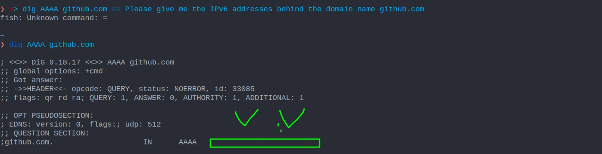
Who hands out IP addresses?
That depends on where you are. Regional Internet Registries (RIRs) oversee the allocation and registration of IPv4 addresses, IPv6 addresses, and autonomous system numbers in their regions. If, like me, you’re in Europe, the addresses you use to browse the web are allocated through the RIPE NCC.

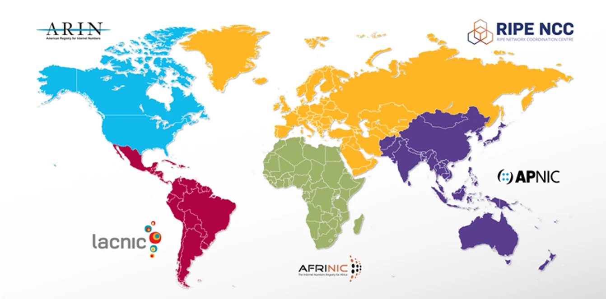
For an individual hobbyist, going directly to a registry isn’t the practical route. Fortunately, RIRs work with Local Internet Registries (LIRs); RIPE maintains a list of its members.
Contact an LIR, such as the service linked in the original guide, and ask for IPv6 address space. The next question is: which kind?
Provider independent
Independent of a provider’s address block, with more administration, fees, and requirements. The original guide treats this as the more involved route for someone building a business. See RIPE’s PI assignment process.
Provider aggregated
A range carved from the LIR’s own space and leased to you. The LIR owns the range, so you can’t take it with you, but you administer it. The guide’s 2023 estimate was around $100 a year.
Once you have your IPv6 range, how do you get the rest of the Internet to talk to you? Simple:
- Learn BGP.
- Find a provider that lets you peer with them to exchange routes.
- Announce your routes like the brave Internet citizen you are!
- You can even practice for free on DN42.
Wait. Isn’t that a little overblown? To host a simple blog, I need to spend hundreds of dollars a year, leave IPv4 users behind, and learn low-level BGP networking?
Well, yes. Maybe. But you did want to learn. ¯\_(ツ)_/¯
Borrow a place on the Internet
Okay, okay. Owning an IP address range might be overkill. Where else can we get a public address? Like when you need a lighter and don’t have one: you ask someone else.
What about your ISP?
If you’re reading this, you’re already on the Internet, so you already have an IP address. You can find it on What Is My IP Address.
From the original: finding your public IP

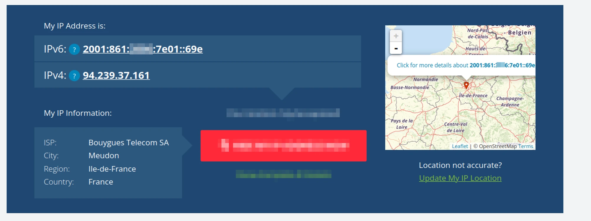
It’s possible to start your cloud using your ISP’s address. But I don’t recommend it as your first step: there are more moving parts than necessary.
- Your address might change. A dynamic address means setting up dynamic DNS with a service such as No-IP to keep your cloud easy to reach.
- ISP networks filter traffic. Mail traffic is a common example: providers may block it to limit spam and infected machines. Policies differ between ISPs, leaving you to wonder why something doesn’t work.
- You don’t fully control the router. The box between your home and the ISP might restrict features or configurations to reduce support needs and prevent abuse.
- Your partner would like the Wi-Fi to keep working. They may care rather less about your learning adventure when it breaks the Internet. Your relationship will thank you for experimenting elsewhere.
So we need to stand on the shoulders of someone already established on the Internet, with a public endpoint that can route traffic to us.
Cloudflare: the easy way in
The path of least resistance in the original guide was Cloudflare Tunnel. There are already plenty of setup tutorials, so I won’t repeat all the details here.
In essence, you run a binary on your own server. It establishes a tunnel to Cloudflare’s infrastructure. Cloudflare then routes public traffic through that tunnel, making services on your internal network accessible from the Internet.

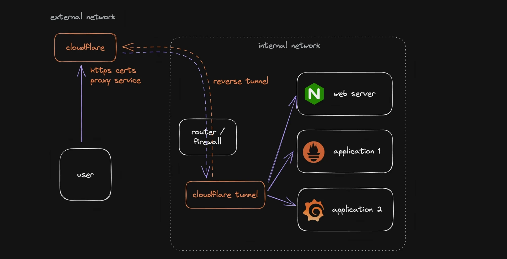
The original article highlights several tradeoffs: public web access centered on ports 80 and 443, restrictions around disproportionate non-web traffic such as images and video, and a dependence on Cloudflare’s tooling when you want to extend the setup. These are the author’s 2023 observations; product features and terms may have changed.
For more context, the original guide also links to this discussion of the downsides.
What if we could build the same idea ourselves, with the freedom to route whatever traffic we want?
Your gateway to the Internet
Now for the real deal. We’re going to create our own virtual private network. It takes some time, but we’ll be free to route different kinds of traffic and extend the network as our needs grow.
We still need someone to lend us a public IP address. The straightforward option is to rent a cheap Virtual Private Server (VPS) from a hosting provider.
The provider matters less than you might think: we’re mainly shuffling packets around. Pick a VPS near your own network. If your private network is in Paris, sending all its traffic through Sydney isn’t very efficient.

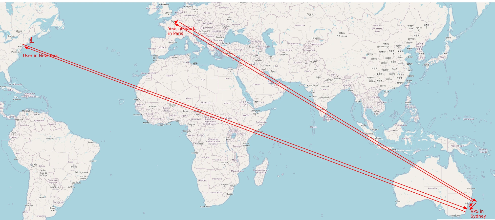
In 2023, I recommended Hetzner for affordable, reliable instances in Europe: roughly $5 per month for 2 vCPUs, 4 GB of RAM, and 20 TB of traffic. I’d also heard good things about Linode in the US. These are historical examples, rather than current price quotes.
From the original: the 2023 VPS pricing table

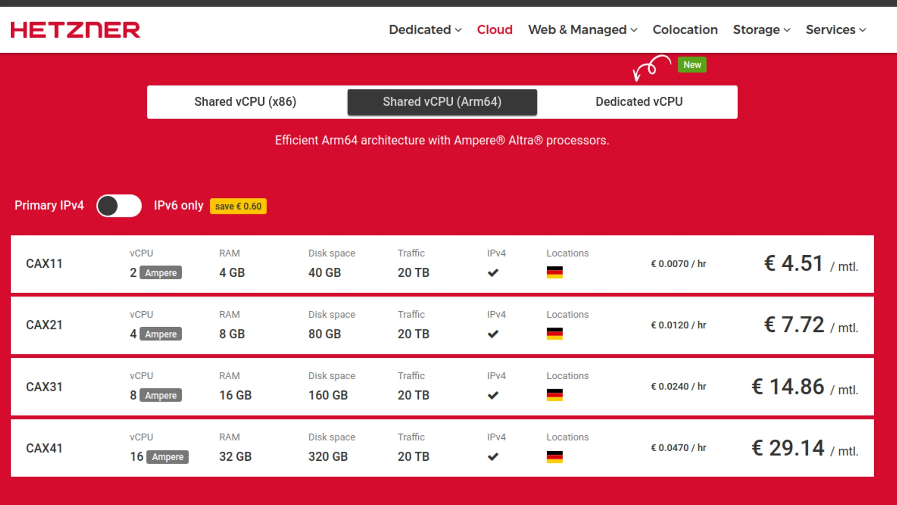
Unless you plan to run applications on the VPS—which we won’t in this guide—you don’t need to worry much about the CPU architecture. We just need Linux to move packets around.
Pick your VPS and install Linux. The rest of this guide uses Debian Bookworm. SSH into the machine and list its network interfaces:
ip a
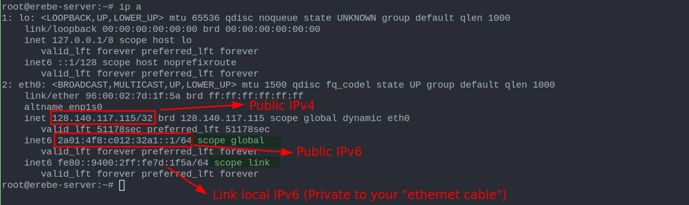
You now have a public IP address: your gateway to the Internet and the entry point to your own cloud. From your local machine, try pinging both addresses.
From the original: a successful IPv4 and IPv6 ping

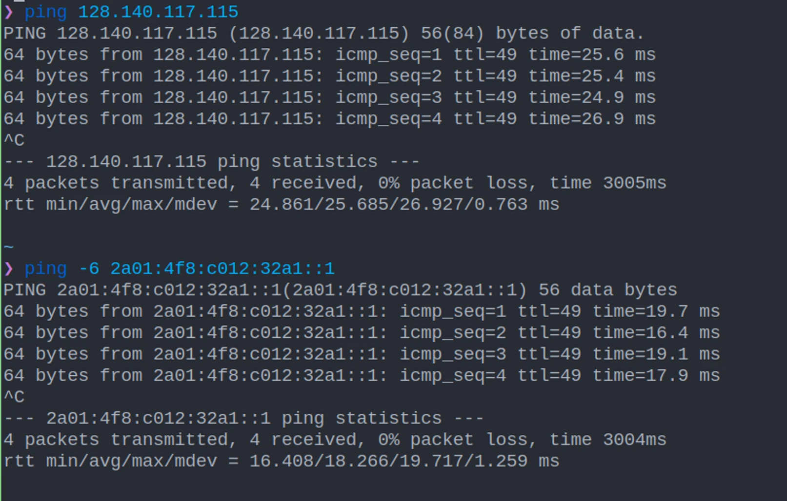
A network with WireGuard
We’ll build our network with WireGuard: a simple, modern VPN with modern cryptography and a focus on performance. Once it’s in place, your applications will have a private path to the VPS. Then we’ll make them reachable from the Internet.

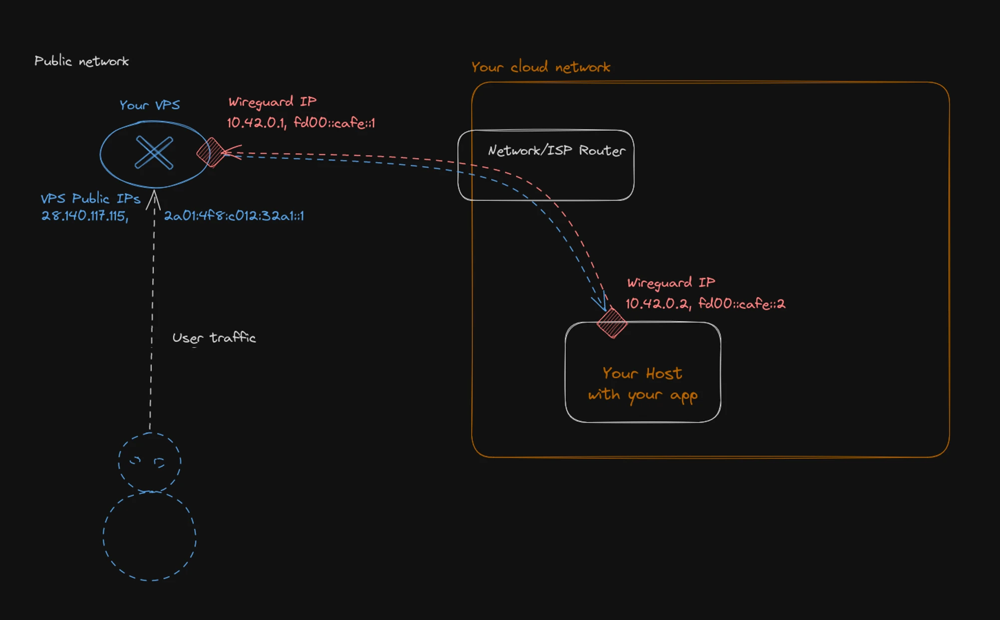
Our network has two subnets: one for IPv4 and one for IPv6.
| Network | Private subnet | VPS | Host |
|---|---|---|---|
| IPv4 | 10.42.0.0/16 | 10.42.0.1 | 10.42.0.2 |
| IPv6 | fd00:cafe::/32 | fd00:cafe::1 | fd00:cafe::2 |
The IPv4 block contains 65,536 addresses; the IPv6 block contains 296. Both are private ranges. These addresses won’t be routed on the public Internet. Visitors will see the VPS’s public address; the machines behind it stay inside your network.
Why use private IPv6 space when globally routable IPv6 addresses could avoid NAT? This is a beginner’s guide. Starting privately helps avoid unintentionally exposing your network through routing mistakes. It isn’t a dead end: you can later add a third, globally routable IPv6 subnet alongside the private ones.
Prepare the VPS
Open a root shell on the VPS. Refresh Debian’s package index, upgrade the installed packages, and install the tools we’ll use:
apt-get update && apt-get upgrade -y
apt-get install -y vim nano curl wireguard nftablesGive each peer an identity
WireGuard authenticates peers using public and private key pairs. We need one pair for the VPS and another for the machine running our applications.
cd /etc/wireguard
# Restrict key files to their owner from the moment they are created.
umask 077
wg genkey | tee vps.private_key | wg pubkey > vps.public_key
wg genkey | tee my_cloud.private_key | wg pubkey > my_cloud.public_keyKeep each private key secret; only its machine needs it. Public keys can be shared with the other peers. The examples below use __VPS_PRIVATE_KEY__, __VPS_PUBLIC_KEY__, __HOST_PRIVATE_KEY__, and __HOST_PUBLIC_KEY__ in place of the key values printed in the PDF. Replace those placeholders with your own generated values.
Configure WireGuard on the VPS
Create /etc/wireguard/wg0.conf:
[Interface]
Address = 10.42.0.1/16, fd00:cafe::1/32
PrivateKey = __VPS_PRIVATE_KEY__
ListenPort = 995
# Linux must forward packets between the public and VPN interfaces.
PostUp = sysctl -w net.ipv4.ip_forward=1
PostUp = sysctl -w net.ipv6.conf.all.forwarding=1
[Peer]
PublicKey = __HOST_PUBLIC_KEY__
AllowedIPs = 10.42.0.2/32, fd00:cafe::2/128Save and exit your editor (:x in Vim). Start the interface and inspect it:
wg-quick up wg0
ip a show wg0
ping -c 4 fd00:cafe::1You should see a new wg0 interface with 10.42.0.1/16 and fd00:cafe::1/32. Its local IPv6 address should respond to the ping.
Example: WireGuard startup output
[#] ip link add wg0 type wireguard
[#] wg setconf wg0 /dev/fd/63
[#] ip -4 address add 10.42.0.1/16 dev wg0
[#] ip -6 address add fd00:cafe::1/32 dev wg0
[#] ip link set mtu 1420 up dev wg0
[#] sysctl -w net.ipv4.ip_forward=1
net.ipv4.ip_forward = 1
[#] sysctl -w net.ipv6.conf.all.forwarding=1
net.ipv6.conf.all.forwarding = 1If you edit the configuration later, restart the interface with wg-quick down wg0 && wg-quick up wg0. To bring it up automatically after a reboot, enable its systemd unit:
systemctl enable wg-quick@wg0
# After the next reboot, systemd manages the interface.
systemctl status wg-quick@wg0That’s the VPS side done. Time to connect your own machine.
Connect your host
Your host can be anything that runs WireGuard: a Raspberry Pi, a ZimaBoard, a laptop, or a virtual machine on your laptop. In this guide, it’s another Debian Bookworm machine.

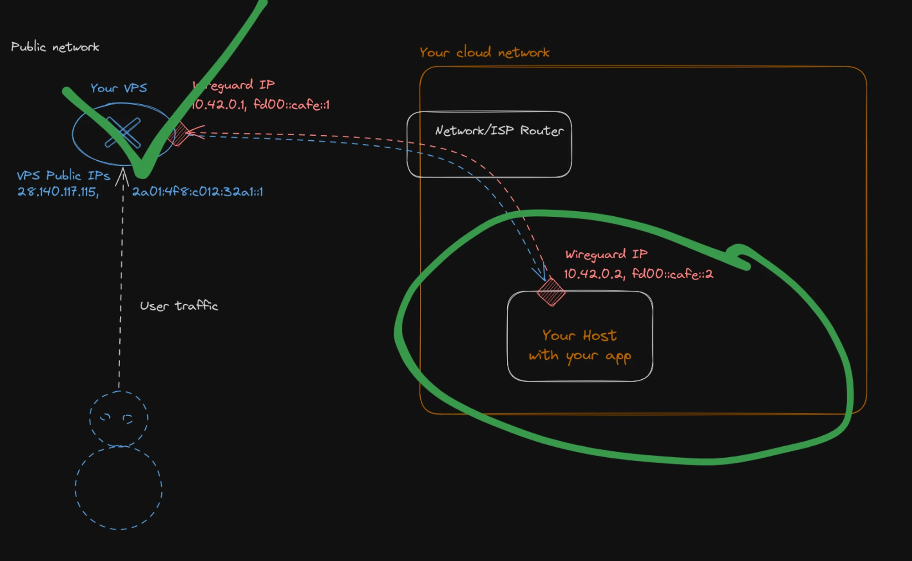
Open a root shell on your host, update the system, and install WireGuard:
apt-get update && apt-get upgrade -y
apt-get install -y vim nano curl wireguardCreate its configuration with the host’s private key and the VPS’s public key. Use the public address of your own VPS for Endpoint; it can be IPv4 or IPv6.
[Interface]
Address = 10.42.0.2/32, fd00:cafe::2/128
PrivateKey = __HOST_PRIVATE_KEY__
[Peer]
PublicKey = __VPS_PUBLIC_KEY__
AllowedIPs = 10.42.0.0/16, fd00:cafe::/32
Endpoint = [2a01:4f8:c012:32a1::1]:995
# Keep the NAT mapping alive when the host sits behind a router.
PersistentKeepalive = 20And now, the grand moment. Bring the interface up and ping the VPS using its private addresses:
wg-quick up wg0
ping -c 4 10.42.0.1
ping -6 -c 4 fd00:cafe::1Example: successful private-network pings
64 bytes from 10.42.0.1: icmp_seq=1 ttl=64 time=20.4 ms
64 bytes from 10.42.0.1: icmp_seq=2 ttl=64 time=19.5 ms
64 bytes from 10.42.0.1: icmp_seq=3 ttl=64 time=16.4 ms
64 bytes from 10.42.0.1: icmp_seq=4 ttl=64 time=17.4 ms
4 packets transmitted, 4 received, 0% packet loss
64 bytes from fd00:cafe::1: icmp_seq=1 ttl=64 time=19.2 ms
64 bytes from fd00:cafe::1: icmp_seq=2 ttl=64 time=16.1 ms
64 bytes from fd00:cafe::1: icmp_seq=3 ttl=64 time=17.7 ms
64 bytes from fd00:cafe::1: icmp_seq=4 ttl=64 time=18.3 ms
4 packets transmitted, 4 received, 0% packet lossYour host and VPS can now talk over both IPv4 and IPv6, through the WireGuard tunnel.
Let’s try HTTP
Run a small HTTP server on your host. Use a separate directory for its content so you don’t accidentally serve the WireGuard configuration and its private key.
mkdir -p /tmp/cloud-demo
printf 'Hello from my cloud!\n' > /tmp/cloud-demo/index.html
python3 -m http.server --bind :: 80 --directory /tmp/cloud-demoFrom the VPS, request the host’s private address:
curl 'http://[fd00:cafe::2]'
# Hello from my cloud!Hooray! HTTP works. But if you try the VPS’s public address, it fails:
curl 'http://[2a01:4f8:c012:32a1::1]'
# curl: (7) Failed to connect ... port 80: Couldn't connect to serverPeople arriving from the Internet still can’t see your app. Let’s fix that.
Let the traffic in

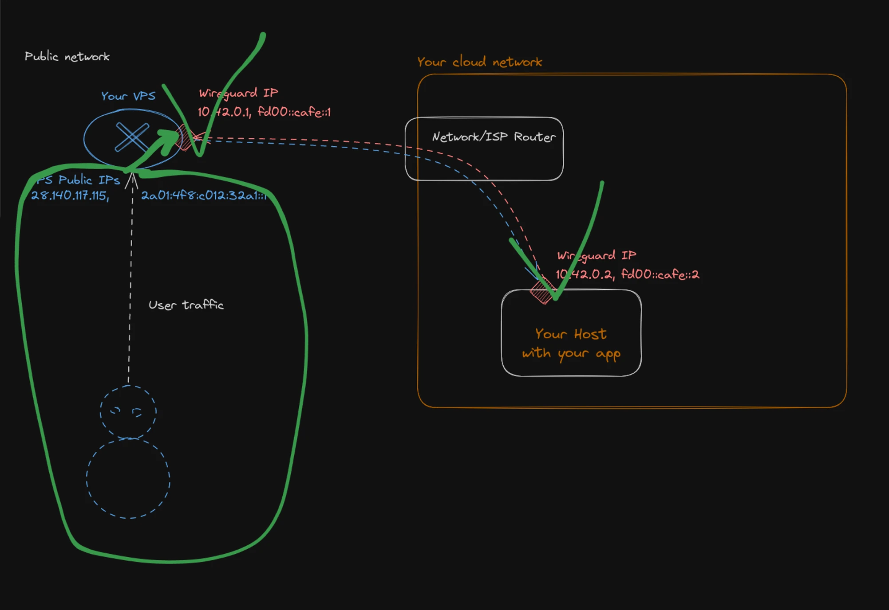
This time, we need the Linux kernel itself—specifically, its packet filtering features. Each received packet follows a series of hooks:

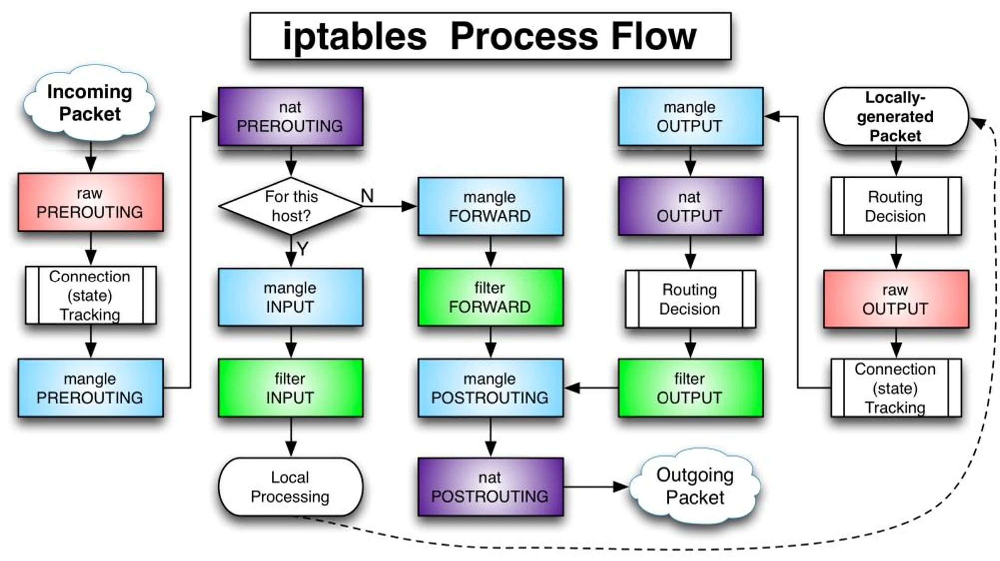
When a request hits the VPS’s public address, the kernel decides that the traffic is for this host. It tries to deliver the packet to a local process listening on port 80. Unfortunately, that process is in another castle: our private host.
We need the kernel to take the forward branch instead. We’ll use nftables, the modern alternative to iptables, to change the packet’s destination before that routing decision.
The firewall configuration
Write the following to /etc/nftables.conf on your VPS. The example uses eth0 as its public interface. Replace it if your interface has a different name.
The rules allow SSH and WireGuard on the VPS, forward ports 80, 443, and 2222 to the host, and masquerade the forwarded connection so replies return through the tunnel.
#!/usr/sbin/nft -f
flush ruleset
table inet SERVER_FIREWALL {
set blacklisted_ips {
type ipv4_addr;
flags dynamic, timeout;
timeout 5 m;
}
chain input {
type filter hook input priority 0; policy drop;
ct state invalid drop comment "early drop of invalid packets"
ct state { established, related } accept
iif lo accept comment "accept loopback"
iifname wg0 accept comment "accept wireguard traffic"
# ICMPv6 is needed for IPv6 operation, not only ping.
meta l4proto icmp accept
meta l4proto ipv6-icmp accept
udp dport 546 ip6 saddr { fc00::/7, fe80::/10 } accept
tcp dport 22 accept comment "accept local SSH"
udp dport 995 accept comment "accept wireguard"
}
chain nat_prerouting {
type nat hook prerouting priority 0; policy accept;
# Original example: a shared rate limit and an IPv4 blacklist.
tcp dport { 22, 2222 } ct state new, untracked \
limit rate over 5 / minute \
add @blacklisted_ips { ip saddr }
ip saddr @blacklisted_ips drop
# Change the destination before the kernel decides where to send it.
iif eth0 tcp dport { 80, 443, 2222 } dnat ip to 10.42.0.2
iif eth0 tcp dport { 80, 443, 2222 } dnat ip6 to fd00:cafe::2
}
chain forward {
type filter hook forward priority 0; policy drop;
iifname wg0 accept comment "accept forwarding wireguard traffic"
oifname wg0 accept comment "accept forwarding wireguard traffic"
}
chain nat_postrouting {
type nat hook postrouting priority 0; policy accept;
# The host must reply through the VPS instead of its default gateway.
iif eth0 oifname wg0 masquerade
}
chain output {
type filter hook output priority 0; policy accept;
}
}Why masquerade?
Changing the destination gets an incoming packet to your host. But the host also needs a return path. With our split tunnel, replies to an arbitrary Internet client would otherwise follow the host’s usual default route.
The masquerade rule replaces the client’s source address with the VPS’s address on the outgoing WireGuard interface. Your host replies to that private address, and connection tracking reverses the translation on the way back. The public client sees a response from the VPS.
Masquerading here makes the application see the VPS’s private address as its client. The example also starts with flush ruleset, replacing the VPS’s existing nftables rules. It is the original tutorial setup for a dedicated gateway.
Apply the rules on the VPS:
chmod +x /etc/nftables.conf
/etc/nftables.confNow, from your host or another Internet-connected machine, request the VPS’s public addresses. Substitute your own VPS addresses:
curl 'http://[2a01:4f8:c012:32a1::1]'
# Hello from my cloud!
curl http://128.140.117.115
# Hello from my cloud!Hooray for IPv6. Hooray for IPv4. You can now route public traffic to a machine inside your own cloud network.

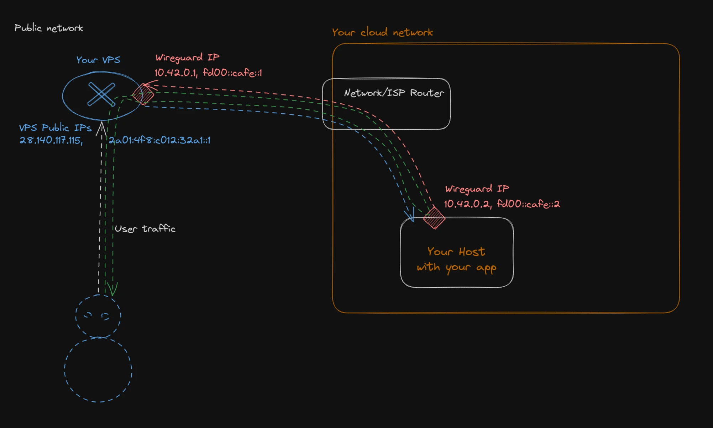
Run something useful
Once you install Docker on the host, you can run an application in a container. For example, here is the Warpgate setup from the guide, with the image name’s printing errors corrected:
docker run --rm -ti \
-p 443:8888 -p 2222:2222 \
-v /mnt:/data \
ghcr.io/warp-tech/warpgate setup
docker run --rm -ti \
-p 443:8888 -p 2222:2222 \
-v /mnt:/data \
ghcr.io/warp-tech/warpgateReach Warpgate on the HTTPS port of your VPS, accepting the self-signed certificate for this example.

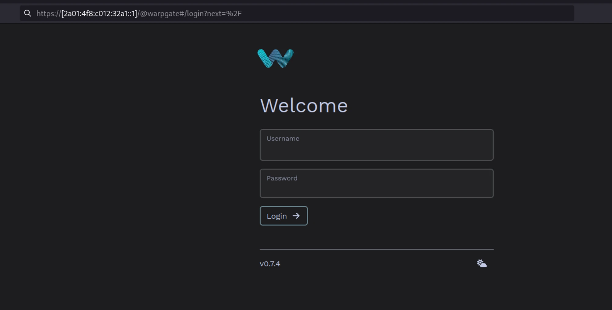
Bravo! Enjoy your moment of triumph—but don’t let it go to your head. There’s still plenty to learn in the networking world.
One network, more machines
I won’t go into every detail, but there are three ways to extend your private network.
1. Connect every machine to the VPS
Connect the next host exactly as you connected the first. This works well, but traffic between hosts has to go out to the VPS and back into your network. For lots of local communication, that’s a lot of unnecessary back and forth.

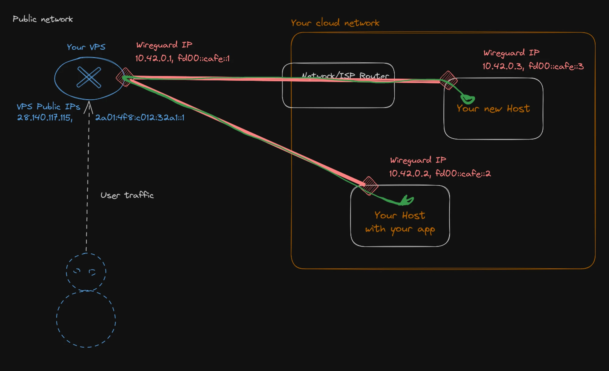
2. Add a gateway inside your network
If machines talk to one another frequently, keep that traffic local. Run another WireGuard gateway inside the private network and configure it to route traffic for the other hosts. You can do all of this with WireGuard.

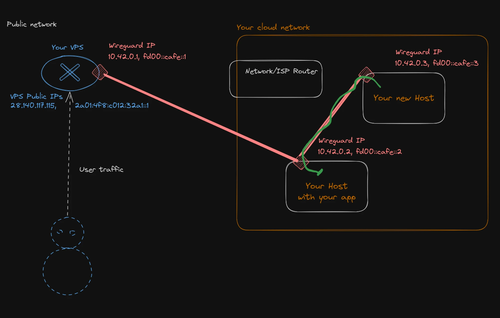
The host acting as a gateway would have a configuration like this:
[Interface]
Address = 10.42.0.2/16, fd00:cafe::2/32
ListenPort = 995
PrivateKey = __HOST_PRIVATE_KEY__
# This host now routes packets for the peers behind it.
PostUp = sysctl -w net.ipv4.ip_forward=1
PostUp = sysctl -w net.ipv6.conf.all.forwarding=1
[Peer]
PublicKey = __VPS_PUBLIC_KEY__
AllowedIPs = 10.42.0.1/32, fd00:cafe::1/128
Endpoint = [2a01:4f8:c012:32a1::1]:995
[Peer]
PublicKey = __NEW_HOST_PUBLIC_KEY__
AllowedIPs = 10.42.0.3/32, fd00:cafe::3/128And on the VPS:
[Interface]
Address = 10.42.0.1/16, fd00:cafe::1/32
PrivateKey = __VPS_PRIVATE_KEY__
ListenPort = 995
PostUp = sysctl -w net.ipv4.ip_forward=1
PostUp = sysctl -w net.ipv6.conf.all.forwarding=1
[Peer]
PublicKey = __HOST_PUBLIC_KEY__
# The gateway host routes traffic for the rest of the private network.
AllowedIPs = 10.42.0.0/16, fd00:cafe::/323. Build a full mesh
Every machine connects directly to every other machine. The route is efficient, but the setup is more involved: adding a host means updating the configurations on all the others. Personally, I find that tedious.

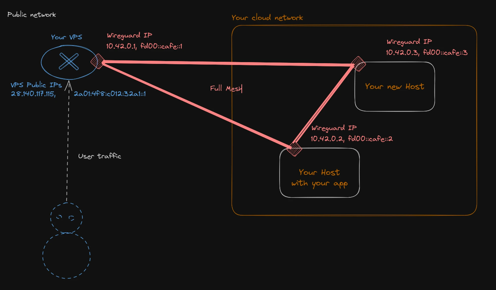
The original guide recommends CasaOS as a way to install applications on your host and have some fun with your new setup.
A small cloud. A lot of possibility.
We’ve walked through the steps needed to build your own cloud network, reachable from the Internet. A public address, a private tunnel, a little routing—and your applications have a home.
Everything is manual at this point, and there are still single points of failure. To go further, you could make the NAT gateway redundant with two VPSs and a floating IP, or introduce automation and testing to configure and deploy your WireGuard tunnels.
This might feel like a toy example, but the broader pattern—private machines behind controlled public entry points—is also useful in larger cloud infrastructure. The original article draws a comparison with AWS private networks and NAT gateways for controlling outbound traffic, while inbound access needs its own entry point.
Even on AWS, building that network takes configuration. At Qovery, the original guide’s example made the cluster’s network setup available in a click, without all this manual fiddling.
This was the network plane. Maybe next time, we’ll explore the data plane.
Hope you enjoyed the journey. Now go build something. :)
About this edition
This web edition follows Build your own cloud network, exported to PDF on 12 December 2023. Its 26 pages have been reflowed into one article, with the original references and all 17 substantial figures. Three figures split across pages have been rejoined.
Prose has been lightly edited for readability, repeated page-break text removed, and repetitive terminal output condensed. Printed private keys are replaced with placeholders; key files are created with restricted permissions, and the HTTP demo serves a separate directory. Obvious address and image-name typos are corrected. The /24 address count, masquerading explanation, rate-limit comment, and AWS comparison have been clarified. The PI allocation discussion is condensed and points to the original RIPE reference.
The examples retain the original Debian Bookworm and 2023 context. This is a formatted archival article, not a newly tested infrastructure deployment.